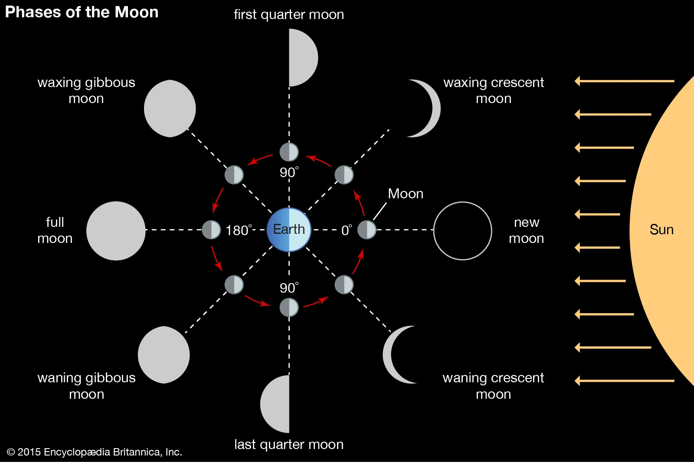
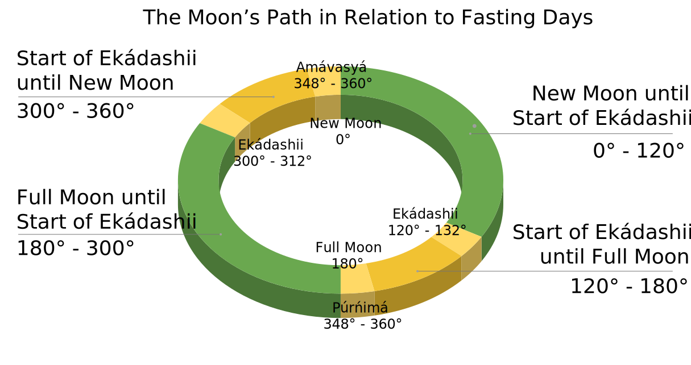
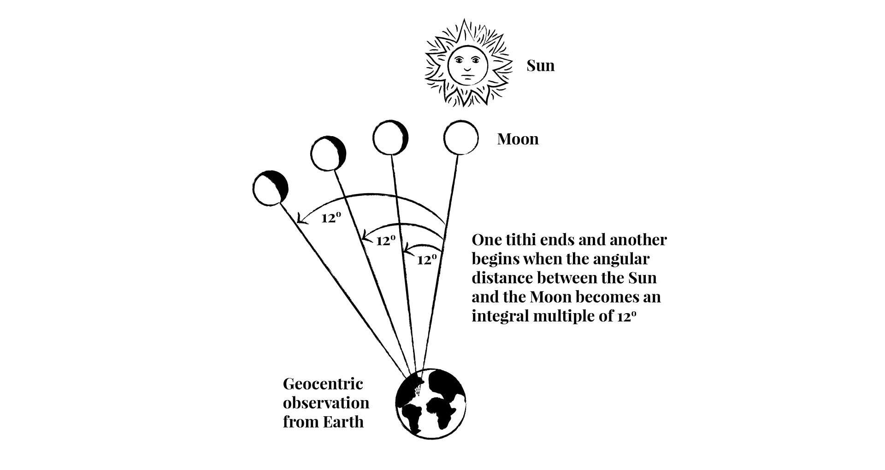
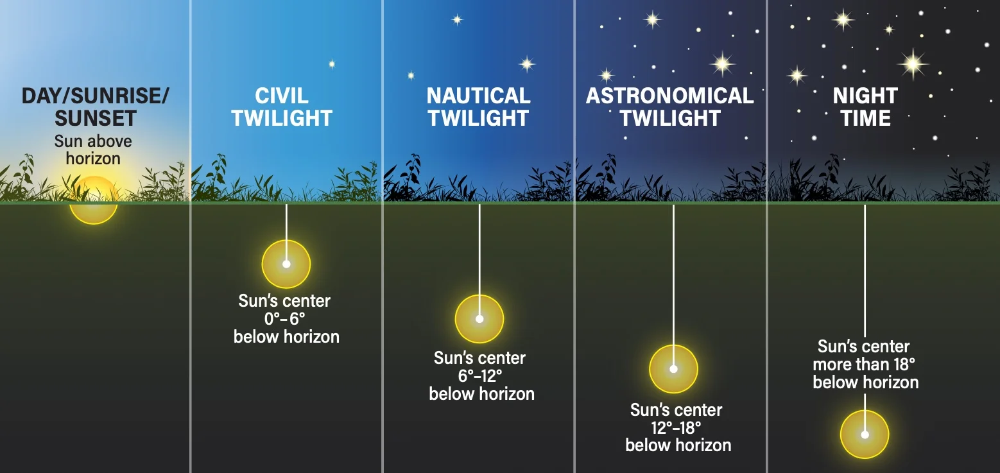
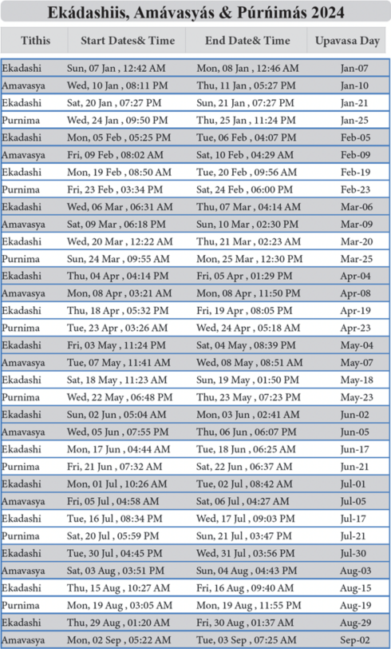
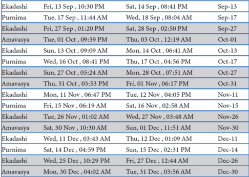

Science of Ananda Marga Upavasa Fasting
Synopsis
Ánanda Márga upavása fasting dates are based on the Vedic solar day (sunrise to sunrise) which occur closest to the relevant lunar phases (ekádashii 🌘 🌔, amávasyá/new moon 🌑 and púrńimá/full moon 🌕). The lunar phases are always the same around earth, and the their calculated values are quite consistent around the web. Sunrise however is something very complex to calculate, and needs to be defined properly in order to decide the correct fasting day.
This software, the Ánanda Márga Scientific Fasting Calendar (AMSFC, earlier named AMUFC), uses scientic models for the calculations, and offers the possibility to use your position, time zone, and sunrise definition of choice, for calculating fasting days.
Methodology
Many of the technicalities for the fasting chart are explained on the Ananda Marga – New York Sector's website.
Here follows some quotes from that website:
Moon Phases
The lunar month, including the moon phases new and full moon, can be described as degrees of a circle (although the true mathematical motion is elliptical, and more than 360°). Such a circle is illustrated in the video and image below:
Tithis
The relevant moon phases for Ananda Marga fasting are called tithis. This Facebook post by Ananda Marga Global describes the tithis and their relation to fasting:
At the time of writing, you can see on the fasting chart on the Official Website of Ananda Marga in Europe - Berlin Sector, that the start and end times are based on tithis (specifically, the times of the tithis named ekádashii, amávasyá and púrńimá are displayed).
Moon phases are always the same all over earth, and most tithi calculations around the web just differ with a few minutes of time (and are usually displayed in India Standard Time).
The Relevant Tithis for Ananda Marga Upavasa Fasting
- Ekádashii (11 tithis/lunar days after new/full moon): occurs at angles 120° - 132° and 300° - 312°
- Amávasyá (New Moon): occurs at angles 348° - 360°
- Púrńimá (Full Moon): occurs at angles 168° - 180°
When the tithis occur, and how long they are, are not that simple to calculate. Quite some knowledge of astromony and mathematics is required (or in the case of this software, the AMSFC, astronomical software libraries were used for the calculations. See Code.)
Understanding the Definitions of Ekádashii, Amávasyá, and Púrńimá
Other than ekádashii occuring 11 tithis after new/full moon, ekádashii starts exactly 120° after the moment of new/full moon. That is exactly one third of the circled path the moon travels around earth. Furthemore, the start of ekádashii until the moment of the upcoming new/full moon is exactly 60° of the moon's path around earth. So if you imagine the lunar path around earth forming a geometric shape in space, starting with ekádashii and ending with new/full moon, a 60° arc is formed. If you let the arc start with new/full moon and end with the beginning ekádashii, a 120° arc is formed.
Amávasyá and púrńimá are lunar days which end at the moment of new/full moon respectively.
More about 60° angles:- 60° angles are found in equilateral triangles and the unit circle in trigonometry.
- The unit circle is a fundamental tool in astronomy because of its connection to trigonometry.
- The pratik consists of two equilateral triangles.
WikiPedia on Tithis:

The astronomical basis of the Hindu lunar day.
The image (credit: User:Freedomji) and video above are taken from Wikipedia.
Read more about tithis on WikiPedia.
Calculating Fasting Dates Without Tithis
This is just an idea that could be used as an alternative method if ever needed. Since it's easier to find programming libraries that calculate dawn, new moon and full moon, an alternative method to get a fasting date could be to get the geocentric phase angle at the sunrises/dawns that occur near the tithis.
This way you wouldn't calculate the time which the tithi spans over the solar day, but instead which angle the sunrises near the tithi has. You can then calculate which solar day is the closest to the tithi by angular comparison, rather than time span.
Dawn and Sunrise
Ananda Marga's fasting system uses the Vedic solar day to determine the date of a day. In some ways it's natural to think of the day starting in the morning. The day actually starts in the morning (when most people wake up), rather than in the middle of the night (when most people are asleep, or have not even gone to bed yet). However, there are number of problems that arise when using sunrise as the start and end of the day.
Issues of Calculating Sunrise and Dawn
- The day starts at a different time every day, and needs to be calculated.
- The day starts at different times in different locations and elevations above sea level - even when those locations are within the same time zone. The accuracy of the position also affects calculations.
- The definition of sunrise differ from place to place, even within the Vedic community (see this discussion and this one). This has a rather big impact on calculating the fasting day, since the choice of sunrise definition sometimes moves the fasting day from one day to another.
- Sometimes, in some places (far north and far south), during summer and winter, there are no sunrises. Namely during midnight sun and polar night (or depending on the definition of sunrise, a larger part of the world).
- Atmospheric refraction, which causes celestial bodies to appear higher above the horizon than they would if the Earth had no atmosphere.
Defining Sunrise
To get the Ananda Marga fasting system correct, we need to define the following:
- What is a sunrise? In other words, when exactly does the solar day start? At what position of the sun?
- What is a sunrise during midnight sun and polar night? In other words, what happens when the defined position of sunrise does not occur, because it is not reached certain days of the year?
Sunrise should probably be astronomical, nautical or civil dawn (see illustration below), or when the top of the sun peeks above the horizon.
Calculating Sunrise
These values are used for calculating sunrise/dawn:
- Date and time
- Latitude and Longitude
- Elevation of the location above sea level
- Height above ground (depending on the definition of sunrise). This height is above the elevation, for example considering the height of a person, and their position (sitting or standing, on the ground or at the top of a skyscraper).
There are different concepts of dawn and sunrise in modern science. On the illustration below you can see that the sun is below the horizon during different twilights, and in the center of the horizon at sunrise. The beginning of these twilights are sometimes refered to as dawn (astronomical, nautical and civil dawn).
 Credit: ASTRONOMY: ROEN KELLY, after Aurora Borealis ObservatoryComparisons With Other Published Calendars
The fasting dates on different Ananda Marga websites on the web are different. However, some of them use the exact same dates, although they are in different time zones:
- Official Website of Ananda Marga in Europe - Berlin Sector
- Ananda Marga India - Delhi Sector
- Ananda Marga Hong Kong Sector
The fasting dates on the above web sites all correspond to the table below, and are on this website considered the official fasting dates (see table below). These dates were compared to the calculations of this software (AMSFC). It can be concluded with high probability that the tithi times are based on Asia/Kolkata (Varanasi) time zone. The fasting dates are most probably also based on the sunrises of Varanasi.
Different Types of Dawn - and Coordinates of Varanasi
Comparisons were made using sunrise and the different types of dawn. There were also different values for latitude and longitude for Varanasi online. However, the latitude and longitude coordinates didn't have much effect on the choice of fasting dates.
The highest accuracy when comparing different implementations of AMSFC with the official dates were:
- Civil Dawn (6°): 90%
- Sun at the Center of the Horizon (0°): 88%
- Top of the Sun Peeks Above the Horizon: 88%
- Nautical Dawn (12°): 88%
- Astronomical Dawn (18°): 82%
AMSFC's Definition of Sunrise
Since civil dawn once had the highest accuracy it is selected as default in the calendar, and the definition of sunrise. It's difficult to achieve a higher accuracy without knowing the exact tools that were used for finding the official dates.
Differences
The reasons 100% accuracy wasn't achieved was probably:
- The calculations of tithis and sunrise are not exactly the same, and the exact location used for the calculations might not be the same. Usually the difference is small, and still the chosen fasting day is different. This is because as the tithi spans similarly over both two solar day candidates, and small details will decide which of the candidates gets chosen.
- Some of the official fasting days are probably miscalculated (because of human error).
- There might be errors in the AMSFC.
Example - Calculation Difference
Here you can see that the chosen dates depend on a few minutes of time, so it's understandable why different calculations will result in different fasting days.Then: 10h 54m 16s until...
Sunrise: Sunday 21 July 2024 at 04:54 India Standard Time
Sunrise type: Civil Dawn 6°
Then: 10h 52m 52s until...
Púrńimá ends: Sunday 21 July 2024 at 15:47 India Standard Time
Official fasting date: 2024-07-21
Example - Human Error
This official fasting date was never chosen by any implementation of the AMSFC, and the choise of fasting date is clear. Púrńimá spans over the 24th for a much longer time than the 25th. So the officially chosen date may be a mistake.Then: 19h 37m 27s until...
Sunrise: Monday 25 March 2024 at 05:33 India Standard Time
Sunrise type: Civil Dawn 6°
Then: 6h 57m 15s until...
Púrńimá ends: Monday 25 March 2024 at 12:31 India Standard Time
Official fasting date: 2024-03-25
 
Accuracy of the Ananda Marga Fasting Calendar (AMSFC)
This software is based on Astronomy Engine, a software engine accurate to within ±1 arcminute (1⁄60th of a degree). It is based on the authoritative and well-tested models VSOP87 and NOVAS C 3.1.
These models determine the precise positions of celestial bodies like stars, planets, the Moon, and the Sun at a given time. However, sunrise is influenced by additional factors beyond its exact position. Sunrise is affected by the atmosphere which refracts sunlight, causing the Sun to appear slightly higher above the horizon than it actually is. This affects the exact timing of sunrise and sunset. Also, sunrise depends on your location on Earth.
Atmospheric refraction, which causes celestial bodies to appear higher above the horizon than they would if the Earth had no atmosphere. Astronomy Engine uses a correction of 34 arcminutes. Real-world refraction varies based on air temperature, pressure, and humidity, which are not taken into account.
Einstein's Theory of Relativity
Einstein's theory of relativity does have some subtle effects on the motion of celestial bodies, including the Moon. One effect is called relativistic precession, which causes the Moon's orbit to slowly wobble over time. However, the magnitude of these relativistic effects is incredibly small. They have a negligible impact on the overall geometry of the Earth-Sun-Moon system, which determines the Moon's phases. For most astronomical applications, including calculating lunar phases, the influence of relativity is insignificant. The high precision of models like VSOP (within 1 arcsecond for thousands of years) already accounts for the vast majority of the Moon's motion.
The impact of relativity on sunrise and dawn calculations is also negligible for most purposes. Due to Earth's rotation, different parts of the Earth experience slightly different gravitational strengths. According to relativity, time runs slower in weaker gravity. This effect is minuscule but can cause a slight time difference in sunrise depending on your location. Gravity can bend light slightly. This effect is extremely weak, but it can theoretically cause the Sun to appear a tiny bit higher above the horizon during sunrise and sunset compared to a purely Newtonian calculation.
Higher Accuracy
To achieve higher accuracy, the exact location for the observation of the sunrise has to be used, as well as a definition of what counts as sunrise. Perhaps these methods could be used for higher accuracy in sunrise and tithi calculations:
- https://github.com/variar/elp2000-82b
- Eclipse Predictions by Fred Espenak: This model provides highly accurate predictions for lunar phases and eclipses, taking into account various perturbations and corrections.
- Solar and Lunar Almanac (SAA): This model includes detailed algorithms for calculating sunrise and sunset times, considering the Earth’s axial tilt and orbital eccentricity. NOAA Solar Calculator: The National Oceanic and Atmospheric Administration provides a solar calculator that accounts for atmospheric refraction and other factors to give precise sunrise and sunset times. These models incorporate more detailed corrections and perturbations, making them suitable for high-precision astronomical calculations.
- https://www.researchgate.net/publication/228789607_Comparison_between_high_precision_precession_models_for_the_ecliptic_and_the_equator
Conclusion
The default position of Varanasi is taken from WikiPedia: latitude: 25.318889, longitude: 83.012778 and elevation: 80.71.
The default start of day is set to civil dawn.
Appendix
First Night
The midnight that falls during the start and end tithi times of amávasyá is 2nd night. Therefore, normally the first night occurs the night before amávasyá.Unicode Lunar Phases
For the ekádashii phases the symbols are not exactly correct, but still used as indications.
U+1F311 | 🌑 | f0 9f 8c 91 | NEW MOON SYMBOL
U+1F312 | 🌒 | f0 9f 8c 92 | WAXING CRESCENT MOON SYMBOL
U+1F313 | 🌓 | f0 9f 8c 93 | FIRST QUARTER MOON SYMBOL
U+1F314 | 🌔 | f0 9f 8c 94 | WAXING GIBBOUS MOON SYMBOL
U+1F315 | 🌕 | f0 9f 8c 95 | FULL MOON SYMBOL
U+1F316 | 🌖 | f0 9f 8c 96 | WANING GIBBOUS MOON SYMBOL
U+1F317 | 🌗 | f0 9f 8c 97 | LAST QUARTER MOON SYMBOL
U+1F318 | 🌘 | f0 9f 8c 98 | WANING CRESCENT MOON SYMBOL
Unicode sunrise/sunset:
U+263C | ☼ | e2 98 bc | WHITE SUN WITH RAYS
U+2600 | ☀ | e2 98 80 | BLACK SUN WITH RAY